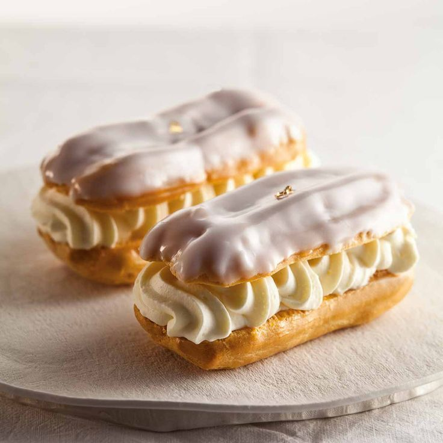

HEAVENLY PASTERIES
HOME
RECIPES
ABOUT
SUBMIT
Search
ECLAIRS

INGREDIENTS
1 cup water
½ cup butter
1 cup all-purpose flour
¼ teaspoon salt
4 large eggs
2 ½ cups cold milk
1 (5 ounce) package instant vanilla pudding mix
1 cup heavy cream
¼ cup confectioners' sugar
1 teaspoon vanilla extract
2 (1 ounce) squares semisweet chocolate
2 tablespoons butter
1 cup confectioners' sugar
1 teaspoon vanilla extract
3 tablespoons hot water
INSTRUCTIONS
Preheat the oven to 450 degrees F (230 degrees C). Grease a cookie sheet; set aside.
Make choux pastry: Combine water and butter in a medium pot. Bring to a boil, stirring until butter melts completely. Reduce heat to low; add flour and salt. Stir vigorously until mixture leaves the sides of the pan and begins to form a stiff ball. Remove from heat.
Add eggs, one at a time, beating well after each addition until incorporated. Using a spoon or pastry bag fitted with a No. 10 or larger tip, spoon or pipe dough onto the prepared cookie sheet in 1 1/2x4-inch strips.
Bake in the preheated oven for 15 minutes. Reduce heat to 325 degrees F (165 degrees C) and continue baking until the bottoms sound hollow when lightly tapped, about 20 more minutes. Cool completely on a wire rack.
Make filling: Combine milk and pudding mix in a medium bowl according to package directions. Beat heavy cream with an electric mixer in a separate medium bowl until soft peaks form. Beat in confectioners' sugar and vanilla. Fold whipped cream into pudding.
Cut tops off of cooled pastry shells with a sharp knife. Fill shells with pudding mixture and replace tops.
Make icing: Melt chocolate and butter in a medium saucepan over low heat. Stir in confectioners' sugar and vanilla. Stir in hot water, 1 tablespoon at a time, until icing is smooth and has reached desired consistency. Remove from heat and cool slightly.
Drizzle chocolate icing over filled eclairs. Store in the refrigerator until serving.
 HEAVENLY PASTERIES
HEAVENLY PASTERIES